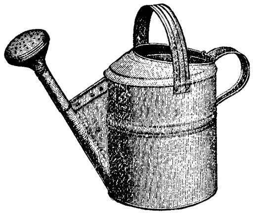

BESOINS
(relationnels)
"Les gens n'ont pas besoin de conseils, ils ont besoin de compréhension."
H. Jackson BROWN Jr.
H. Jackson BROWN Jr.
Issus du regard du psychosociologue Jacques SALOME, les besoins relationnels sont souvent globalisés sous le pudique "besoin d’être aimé", comme s’il les recouvrait tous et évitait de les nommer, de les reconnaître. Même s’ils ne sont pas toujours bien identifiés, nos besoins relationnels sont aussi importants que se nourrir, boire, dormir, être en sécurité…
Ces besoins sont à la base de notre développement personnel, notre santé psychique et de notre équilibre relationnel au sein de nos différents environnements. Les combler signifie prendre soin de notre estime de soi et améliore la qualité relationnelle que nous entretenons avec nos semblables. Ils sont liés à la capacité à s’aimer, donc à la possibilité d’aimer, en étant moins dépendant du besoin, voire de l’exigence, d’être aimé.
En premier lieu, le besoin de se dire, c’est-à-dire de pouvoir passer de l’impression à l’expression, de pouvoir mettre des mots sur son ressenti, ses sentiments, ses émotions ou les idées qui nous traversent. Le besoin de se dire est celui qui nous fait nous exprimer avec nos propres mots et pas ceux que nous avons empruntés. Il s’agit de re-prendre à notre compte la substance de nos propos.
Le besoin d’être entendu, c’est-à-dire avoir le sentiment que ce que j’ai dit n’est pas tombé dans le vide, ne s’est pas perdu, n’est pas nié, déformé ou récupéré, mais est bien arrivé jusqu’à l’autre, le destinataire que j’ai choisi. Ce besoin est étroitement lié au besoin d’affirmation, lui-même conditionné par celui d’approbation (à l’origine de nombre de dépendances affectives et relationnelles). Ces deux besoins étant antinomiques, si je prends la liberté de m’affirmer, je dois prendre le risque de ne pas avoir l’approbation de l’autre.
Le besoin d’être reconnu, d’être vu et perçu tel que je suis, et non tel que l’autre me voudrait ou imagine que je suis et assumer ainsi ma singularité.
Le besoin d’être valorisé, pouvoir ressentir que j’ai une valeur, que l’on compte sur moi, que je représente quelque chose d’important pour les personnes significatives de ma vie. Le besoin d’avoir une intimité un espace et un temps, où l’autre n’a pas accès sans mon accord, ne fait pas intrusion. Ce besoin d'être valorisé nous donne de la valeur aux yeux d’autrui. Mais derrière cette évidence se tient la nécessité d’avoir une place, un rôle dans sa vie, sa profession, sa famille, son groupe d’amis. C’est aussi être valorisé pour nos réussites et pas uniquement pointer du doigt nos échecs. Nous sommes ici dans l’éternelle différence entre l’Être et le Faire. Nos actions, nos comportements, nos décisions ou nos résultats ne forment aucunement notre identité.
Le besoin de créer, d'influencer notre environnement en nous sentant l'auteur de notre vie.
Ces besoins sont à la base de notre développement personnel, notre santé psychique et de notre équilibre relationnel au sein de nos différents environnements. Les combler signifie prendre soin de notre estime de soi et améliore la qualité relationnelle que nous entretenons avec nos semblables. Ils sont liés à la capacité à s’aimer, donc à la possibilité d’aimer, en étant moins dépendant du besoin, voire de l’exigence, d’être aimé.
En premier lieu, le besoin de se dire, c’est-à-dire de pouvoir passer de l’impression à l’expression, de pouvoir mettre des mots sur son ressenti, ses sentiments, ses émotions ou les idées qui nous traversent. Le besoin de se dire est celui qui nous fait nous exprimer avec nos propres mots et pas ceux que nous avons empruntés. Il s’agit de re-prendre à notre compte la substance de nos propos.
Le besoin d’être entendu, c’est-à-dire avoir le sentiment que ce que j’ai dit n’est pas tombé dans le vide, ne s’est pas perdu, n’est pas nié, déformé ou récupéré, mais est bien arrivé jusqu’à l’autre, le destinataire que j’ai choisi. Ce besoin est étroitement lié au besoin d’affirmation, lui-même conditionné par celui d’approbation (à l’origine de nombre de dépendances affectives et relationnelles). Ces deux besoins étant antinomiques, si je prends la liberté de m’affirmer, je dois prendre le risque de ne pas avoir l’approbation de l’autre.
Le besoin d’être reconnu, d’être vu et perçu tel que je suis, et non tel que l’autre me voudrait ou imagine que je suis et assumer ainsi ma singularité.
Le besoin d’être valorisé, pouvoir ressentir que j’ai une valeur, que l’on compte sur moi, que je représente quelque chose d’important pour les personnes significatives de ma vie. Le besoin d’avoir une intimité un espace et un temps, où l’autre n’a pas accès sans mon accord, ne fait pas intrusion. Ce besoin d'être valorisé nous donne de la valeur aux yeux d’autrui. Mais derrière cette évidence se tient la nécessité d’avoir une place, un rôle dans sa vie, sa profession, sa famille, son groupe d’amis. C’est aussi être valorisé pour nos réussites et pas uniquement pointer du doigt nos échecs. Nous sommes ici dans l’éternelle différence entre l’Être et le Faire. Nos actions, nos comportements, nos décisions ou nos résultats ne forment aucunement notre identité.
Le besoin de créer, d'influencer notre environnement en nous sentant l'auteur de notre vie.

Le besoin d'intimité, d'avoir un espace (psychique) avec des moments qui nous appartiennent où l'autre ne ferai pas intrusion sans notre accord.
Le besoin de rêver qui est la première étape de la construction d’un projet, qu’il soit personnel ou professionnel. Besoin de rêver que demain sera meilleur qu’aujourd’hui et qu’après demain sera meilleur et ainsi de suite. C'est l'ouverture sur notre avenir.
Ainsi, ces besoins relationnels permettent d’exercer constructivement une influence sur autrui, sur son environnement immédiat et de ne pas être toujours dépendant de la réponse de l’autre. D’autres besoins paraîtront plus prioritaires à certains, mais c’est de leur satisfaction que dépendront l’amour de soi et l’estime de soi.
Répondre à mes besoins relationnels, c'est avoir le sentiment que ce qui est important pour moi dans mes propos est entendu avec le même niveau d’importance pour la personne qui m'écoute. Quand un de mes besoins ne peut être entendu, je me sens obligé de passer à l’acte parce que la violence de l'incompréhension ressentie, à ce moment là devient un langage.
Le besoin de rêver qui est la première étape de la construction d’un projet, qu’il soit personnel ou professionnel. Besoin de rêver que demain sera meilleur qu’aujourd’hui et qu’après demain sera meilleur et ainsi de suite. C'est l'ouverture sur notre avenir.
Ainsi, ces besoins relationnels permettent d’exercer constructivement une influence sur autrui, sur son environnement immédiat et de ne pas être toujours dépendant de la réponse de l’autre. D’autres besoins paraîtront plus prioritaires à certains, mais c’est de leur satisfaction que dépendront l’amour de soi et l’estime de soi.
Répondre à mes besoins relationnels, c'est avoir le sentiment que ce qui est important pour moi dans mes propos est entendu avec le même niveau d’importance pour la personne qui m'écoute. Quand un de mes besoins ne peut être entendu, je me sens obligé de passer à l’acte parce que la violence de l'incompréhension ressentie, à ce moment là devient un langage.
EN RELATION
AUTHENTICITE
RESSENTIMENT

IMAGINAIRE

TRANSE MUER
PEUR
ATARAXIE
(bonheur)